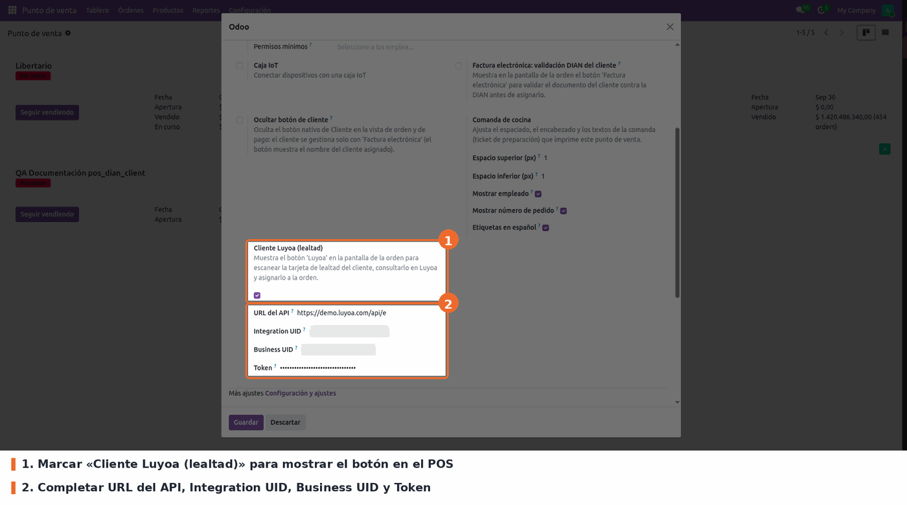
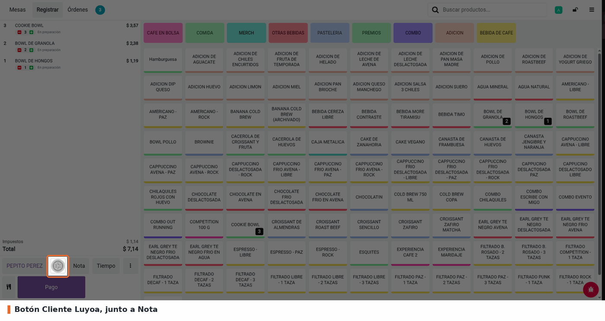
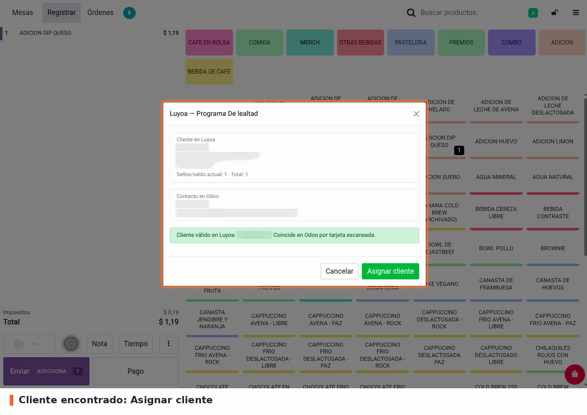
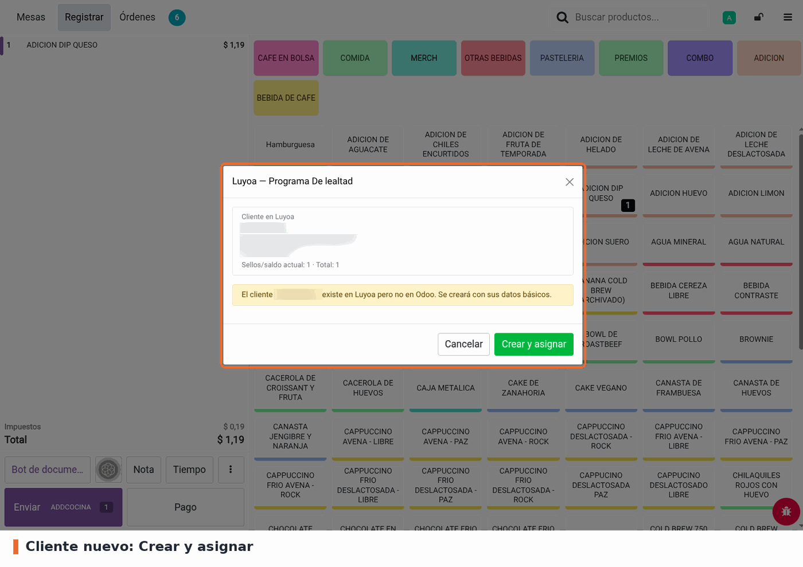
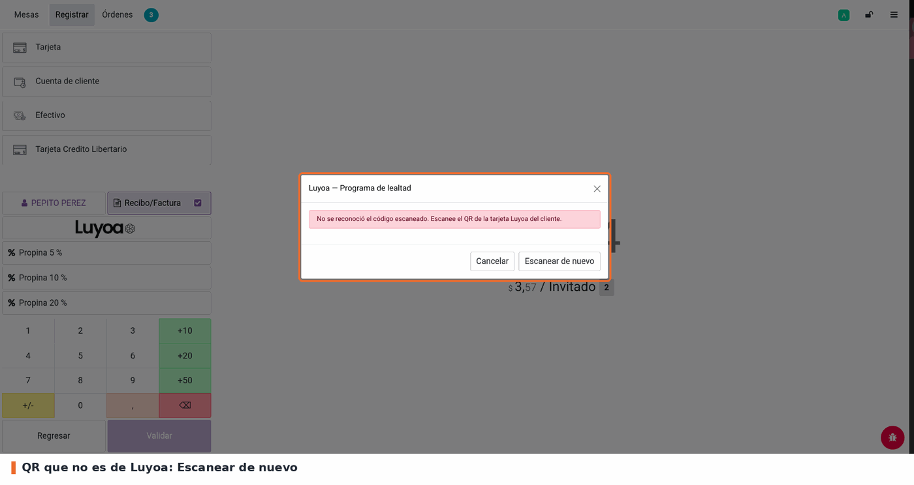
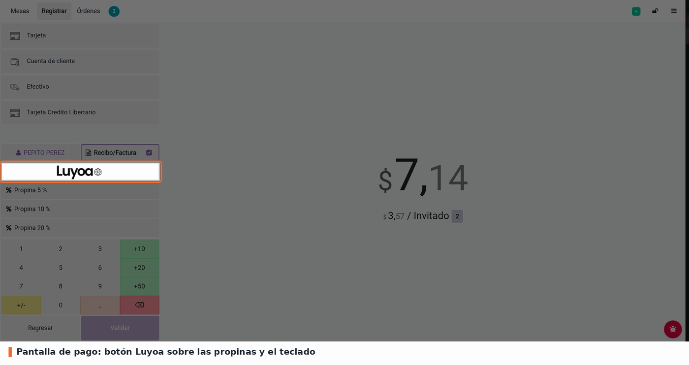

Agrega al POS un botón Cliente Luyoa para identificar al cliente escaneando el QR de su tarjeta de lealtad digital (Apple/Google Wallet) con la cámara del dispositivo, consultarlo en la API de Luyoa y asignarlo a la orden para facturarle.
El flujo completo desde cualquier botón (junto a Nota, en el submenú de los 3 puntos y en la pantalla de pago):
…/c/<customerUID>) y consulta GET /customer/:customerUID en Luyoa con
las credenciales del punto de venta.El contacto de Odoo se busca, en este orden:
Solo el nombre o solo el teléfono no alcanzan para asignar: dos personas pueden compartirlos. La primera vez que el cliente se asigna o se crea, su identificador de Luyoa queda guardado y los próximos escaneos lo encuentran directo. Si el contacto encontrado ya está vinculado a otra tarjeta, no se asigna ni se crea un duplicado: se pide revisarlo en Contactos.
Si el QR no corresponde a un cliente de Luyoa, hay dos contactos en Odoo que coinciden (el popup lista los candidatos), el contacto está archivado, o falla la credencial o la conexión, se muestra al cajero un mensaje claro con qué hacer y no se asigna nadie.
Solo se identifica por QR, con la cámara del POS o de la tablet: no hay entrada manual de identificadores. Las credenciales (Integration UID, Business UID y token) solo las ve el responsable del POS y nunca llegan al navegador: la consulta a Luyoa la hace el servidor.
En Punto de Venta → Configuración → Puntos de venta → (tu tienda) → pestaña Configuración → Cliente Luyoa (lealtad):
https://demo.luyoa.com/api/external/v1 (viene por defecto; es el entorno donde está registrado y habilitado el negocio, no la web de la tarjeta del cliente). Las credenciales solo valen en el entorno donde se generaron: al cambiar la URL el formulario muestra una advertencia.401.Con el botón marcado, los cuatro campos son obligatorios para guardar la configuración; además, si falta alguno, el popup informa exactamente qué falta antes de consultar. Las credenciales solo las ve y edita el responsable del POS (grupo Punto de Venta / Administrador).

Punto de Venta › Configuración › Puntos de venta › (tienda) › Configuración: 1. «Botón Luyoa»; 2. las cuatro credenciales
La cámara del navegador solo funciona sobre HTTPS (en desarrollo,
localhost también sirve). En cajas sin cámara, el diálogo de escaneo del
core muestra el motivo y el cajero puede cerrarlo sin perder la orden.

Pantalla de la orden: botón Cliente Luyoa junto a Nota
Si el cliente ya existe en Odoo, el popup muestra los dos lados y por qué coincidieron (tarjeta escaneada, correo, o nombre y teléfono):

Cliente de Luyoa que ya existe en Odoo: Asignar cliente
Si no existe, se ofrece crearlo con su nombre, correo y teléfono de Luyoa:

Cliente de Luyoa que no existe en Odoo: Crear y asignar
Cuando el QR no es de una tarjeta de Luyoa, o falla la credencial o la conexión, el popup explica el motivo y ofrece Escanear de nuevo o Reintentar; no se asigna nadie:

QR que no corresponde a un cliente de Luyoa
El mismo flujo se abre desde la pantalla de pago:

Pantalla de pago: logo de Luyoa sobre el teclado numérico
Con dos contactos de Odoo que matchean al mismo cliente, el popup lista los candidatos y no deja asignar hasta resolverlo en Contactos. Un contacto archivado, o uno ya vinculado a otra tarjeta de Luyoa, también bloquea la asignación con el aviso correspondiente.
El módulo hoy solo identifica al cliente (lectura). El API de Luyoa expone tres endpoints de escritura para un futuro upgrade, documentados acá para no tener que volver al spec:
POST /transaction — registrar una compra (suma sellos/saldo según las
reglas del negocio en Luyoa). Campos: customerUID (opcional: sin él la
transacción se guarda solo para análisis), businessBranchUID (obligatorio:
mapear cada pos.config → un branch de Luyoa con GET /business-branch),
total (≥ 0), reference (nº de ticket, único), createdAt (ISO 8601,
opcional) y items[] (code, name, quantity ≥ 1, priceEach ≥ 0).
Respuesta: {"success": true, "data": "…"}.POST /transaction/bulk — hasta 100 transacciones por llamada
({"transactions": [...]}). Respuesta con processed / successful /
failed y errores por reference: sirve para subir el día completo al
cierre de caja.POST /reward/redeem/:rewardUID — canjear un reward del cliente. Cuerpo:
{"businessBranchUID": "…"}. Los rewards disponibles por cliente vienen en
GET /customer/:customerUID (data.rewards[]: uid, name, type en
FREE_PRODUCT | DISCOUNT | OTHER, expiresAt en ms y
externalReference para ligarlo a un producto del POS).Punto de enganche natural: la validación del pago (validateOrder) para
/transaction, y el cierre de caja para el bulk. La UI ya conoce el
customerUID (se guarda en res.partner.luyoa_customer_uid al asignar).
GET /transaction, no
se puede conciliar desde Odoo.ILIKE '%<dígitos>%'; uno guardado en Odoo con espacios (+52 55 1234 5678)
no coincide y el popup ofrece crear el cliente. El correo es la clave
principal y la tarjeta vinculada resuelve los próximos escaneos.